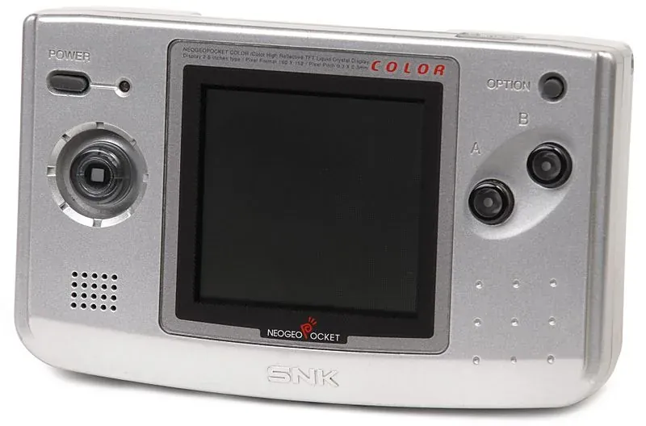

1999 年发布
Neo Geo Pocket Color
SNK彩色掌机 · 格斗游戏圣地 · 40小时超长续航
约200万
全球销量(估)
16位
CPU
2.7寸
屏幕尺寸
40小时
续航(AA×2)
📖 历史与背景
1999年3月16日，SNK在日本发布Neo Geo Pocket Color（NGPC）——这是SNK的第二款掌机，也是唯一一款彩色掌机。前作Neo Geo Pocket（黑白版）于1998年末在日本先行发售，但很快被彩色版取代。
NGPC最大的卖点是其格斗游戏阵容——SNK是格斗游戏之王，《拳皇》《侍魂》《饿狼传说》等经典IP的掌机版质量极高。尤其是《SNK vs Capcom: Match of the Millennium》，汇集两大公司的格斗角色，被认为是掌机上最优秀的格斗游戏之一。
NGPC的微型数字摇杆手感极佳——有明确的「咔嗒」触感（clicky），方向输入精准，非常适合格斗游戏。续航更是惊人：2节AA电池可达40小时，远超Game Boy Color的35小时和Game Gear的3-6小时。
⚙️ 硬件规格
CPU
Toshiba TLCS-900H 16位 (6.144MHz)
屏幕
2.7寸 160×152 反射式STN
色数
同屏4096色（库4,096色）
摇杆
微型数字摇杆（clicky）
电池
2节AA电池（约40小时）
兼容
NGP黑白游戏（彩色显示）
音效
12通道PSG + 4通道PCM
重量
约163g
🎮 经典游戏阵容
SNK vs Capcom: MotM
1999 · 格斗
NGPC巅峰格斗神作
KOF R-2
1999 · 格斗
拳皇掌机版，系统精简但深度十足
金属弹头：第1任务
1999 · 动作
合金弹头掌机原创版
侍魂!2
1999 · 格斗
侍魂掌机版，操作流畅
Gals Fighters
2000 · 格斗
女性角色格斗，隐藏角色超多
Card Fighters' Clash
1999 · 卡牌
SNK与Capcom角色卡牌对战
生化战斗卡片
2000 · 卡牌
口袋妖怪式卡牌RPG
Faselei!
2000 · 战棋
机甲战棋游戏，NGPC独占
🏆 市场表现与影响
- 全球销量：约200万台（估算），远低于Game Boy Color但有小众忠实用户群
- SNK破产：2001年SNK破产重组（后被Playmore收购重建），NGPC的生产和支持随之终止，寿命仅约2年
- 欧美发行：NGPC由SNK的美国分公司发行，但SNK美国分公司在2000年关闭，导致大量已公布的欧美版游戏被取消
- 与DC联动：NGPC可以通过专用连接线与Dreamcast联动的功能，如KOF R-2与KOF'99 Evolution联动解锁隐藏内容
- 收藏热潮：2020年代NGPC在复古游戏圈迎来了收藏热潮，尤其是日版限定配色和稀有游戏卡带价格飙升
💡 趣闻与冷知识
- NGPC的摇杆被称为「click stick」——每个方向都有明确的触觉反馈，被格斗游戏玩家誉为掌机上最好的方向控制器
- NGPC可以向下兼容黑白版Neo Geo Pocket的游戏——且会用彩色显示（部分游戏专为彩色优化）
- NGPC上有一款叫《Dive Alert》的游戏——同时推出Male版和Female版两个版本，类似宝可梦的双版本策略
- NGPC的ROM卡带容量仅4-32MB——但格斗游戏的画面和动画质量远超同容量限制的GBC游戏
- NGPC的销量虽然不高，但二手市场价格一直坚挺——尤其是日版的蓝色、水晶透明等限定配色